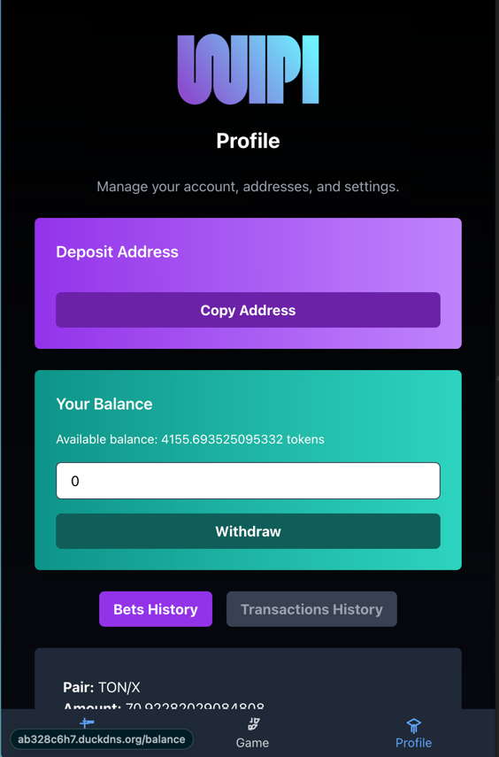

Лабораторная работа №4: Разработка интерфейсов и интеграция с серверной частью
Задача проекта
Разработать клиентские интерфейсы для работы с платформой предсказательного беттинга на базе блокчейна, настроить их взаимодействие с серверной частью.
Используемые библиотеки и их назначение
Для бэкенда:
FastAPI: Обработка серверной логики, включая аутентификацию пользователей и API.SQLAlchemy: Работа с базой данных.pytoniq: Взаимодействие с блокчейном TON, включая вызовы смарт-контрактов.Pydantic: Определение и валидация входных данных.
Описание страниц интерфейса
Главная страница
- Описание: Начальная страница, приветствующая пользователей и предоставляющая возможность подключения кошелька.
- Основные функции:
- Приветственное сообщение и описание платформы.
- Кнопка TonConnect для подключения кошелька.
- Кнопки "Играть" и "Узнать больше" для навигации.

Логика реализации:
- Подключение кошелька: Используется
TonConnectButtonдля взаимодействия с TonConnect. - Предзагрузка данных: При помощи функций
getPairs()иfetchTime()данные о парах и текущем времени блока загружаются и сохраняются в контексте черезsetData. - Обработка ошибок: Ошибки подключения и загрузки данных отображаются в пользовательском интерфейсе.
- Переходы: Кнопки навигации управляют переходом на другие страницы с использованием
useNavigate.
Страница ставок
- Описание: Предоставляет интерфейс для выбора торговых пар и размещения ставок. При первом открытии пользователю показываются инструкции.
- Основные функции:
- Выбор торговой пары.
- Ввод предсказания (вектор цены/направления движения).
- Подтверждение и отправка ставки.

- на изображении: желтая стрелка - агрегированная ставка всех пользователей за прошлый блок, белая стрелка - ставка юзера за прошлый блок, ее же можно двигать, переключая моды осей, чтобы пояставить новую ставку.
Логика реализации:
- Трёхмерный интерфейс ставок: Пользователи видят трехмерный график, на котором агрегированные ставки всех участников за прошлый блок и своя ставка в виде стрелок на графике.
- Обратная связь: После отправки пользователь получает уведомление о статусе ставки.
Страница управления кошельком
- Описание: Позволяет пользователю управлять балансом кошелька, включая пополнение и вывод средств.
- Основные функции:
- Форма пополнения депозита через TON.
- Форма вывода средств на кошелек юзера.
- История транзакций с отображением их статуса.
- История ставок с отображением их статуса. 
Логика реализации:
- Обработка пополнения: Запросы на сервер для обработки депозитов и их конвертации в токены платформы.
- Вывод средств: Инициирование транзакции на указанный адрес (есть возможность сменить адрес).
Страница балансов юзера
- Описание: Позволяет пользователю узнать его оставшийся депозит в игре, а также количество токенов находящихся 'at risk'.
- Основные функции:
- Отображение балансов юзера.
- Кнопка для отключения кошелька.

Логика реализации:
- Обработка пополнения: Запросы на сервер для плучения балансов.
Реализация авторизации
Диаграмма процесса авторизации

Описание работы
Авторизация на платформе организована через интеграцию с блокчейном Ton и использованием механизма ton_proof. Весь процесс проходит несколько ключевых этапов:
- Подключение кошелька:
- Пользователь подключает кошелёк через интерфейс TonConnect на клиенте.
-
Клиент отправляет запрос на сервер для генерации
payload. -
Подписание proof:
- Полученный
payloadподписывается приватным ключом кошелька пользователя. -
Подписанный proof возвращается на фронтенд, а затем отправляется на сервер для проверки.
-
Проверка proof:
- Сервер валидирует подпись, проверяя её с публичным ключом пользователя в блокчейне.
-
Если proof валиден, сервер генерирует пару токенов (access и refresh) и отправляет их клиенту.
-
Хранение и использование токенов:
- Токены сохраняются в
localStorageна клиенте и используются для авторизации запросов к API. - При истечении срока действия токенов клиент автоматически обновляет их через refresh-токен.
Основные компоненты бэкенда
1. Аутентификация и работа с ton_proof
Генерация Payload
@router.get('/payload')
async def generate_payload():
tonproof_service = get_tonproof_service()
payload = await tonproof_service.generate_payload()
return {"payload": payload}
Объяснение логики:
- Генерируется уникальный токен (payload) с ограниченным временем жизни (TTL), который используется для подписи клиентом.
- Взаимодействие осуществляется через сервис TonProofService.
Проверка подписанного Proof
@router.post('/verify_payload')
async def verify_payload(credentials: Credentials):
auth_service = get_auth_service()
tokens = await auth_service.create_token(credentials)
return {
"accessToken": tokens.access_token,
"refreshToken": tokens.refresh_token
}
Логика:
- Принимается ton_proof, подписанный пользователем.
- Проверяется достоверность подписи и её соответствие публичному ключу кошелька.
- При успешной проверке генерируются access и refresh токены для последующей работы клиента.
2. Middleware для проверки авторизации
async def check_for_auth(request: Request, call_next):
if request.url.path.startswith(('/auth', '/docs', '/openapi')) or request.method == 'OPTIONS':
return await call_next(request)
if 'Authorization' not in request.headers:
return JSONResponse(status_code=401, content={'detail': 'Token is empty'})
access_token = request.headers['Authorization'].replace('Bearer ', '')
auth_service = get_auth_service()
try:
user_id = await auth_service.get_user_id_from_jwt(access_token)
except InvalidTokenException:
return JSONResponse(status_code=401, content={'detail': 'Token is invalid'})
except ExpiredTokenException:
return JSONResponse(status_code=401, content={'detail': 'Token is expired'})
request.scope['x_user_id'] = user_id
return await call_next(request)
Назначение:
- Проверяет наличие и валидность токена.
- Извлекает user_id из токена и добавляет его в scope запроса для использования в хендлерах.
3. Реализация TonProofService
Основные методы:
generate_payload: Создаёт временный токен для подписи.check_payload:- Проверяет соответствие домена (
allowed_domains). - Удостоверяется, что срок действия токена не истёк.
- Проверяет подпись через
PyNaCl.
Пример валидации подписи
signature = base64.b64decode(request_raw.proof.signature)
public_key_bytes = bytes.fromhex(request_raw.public_key)
verify_key = VerifyKey(public_key_bytes)
try:
verify_key.verify(msg_hash, signature)
return VerifyResult.VALID
except BadSignatureError:
return VerifyResult.HASH_MISMATCH
Объяснение:
- Подпись проверяется с использованием публичного ключа пользователя.
- Если подпись недействительна, возвращается ошибка HASH_MISMATCH.
4. Сервис работы с токенами (TokenService)
Генерация токенов
def create_auth_token(self, wallet_address: str, payload: str) -> AuthTokens:
access_claims = {"sub": wallet_address, "payload": payload, "exp": datetime.now(tz=UTC) + timedelta(seconds=600)}
refresh_claims = {"sub": wallet_address, "payload": payload, "exp": datetime.now(tz=UTC) + timedelta(days=1)}
return AuthTokens(access_token=self.create_token(**access_claims), refresh_token=self.create_token(**refresh_claims))
Логика:
- Генерирует два токена:
- access_token: Используется для авторизации пользователя.
- refresh_token: Позволяет обновить access_token, если он истёк.
Проверка токена
def get_token_payload(self, token: str) -> dict:
try:
return decode(token, self.jwt_settings.secret_key, algorithms=["HS256"], issuer=self.jwt_settings.issuer)
except ExpiredSignatureJWTError:
raise ExpiredTokenException
except InvalidTokenJWTError:
raise InvalidTokenException
Объяснение: - Расшифровывает токен и проверяет его действительность. - Возвращает данные, если токен валиден, или выбрасывает исключение в случае истечения срока или недействительности.
5. Работа с базой данных через SQLAlchemy
Пример модели пользователя
class User(Base):
__tablename__ = "users"
id = Column(UUID(as_uuid=True), primary_key=True, default=uuid4)
wallet_address = Column(String, unique=True, nullable=False)
username = Column(String, nullable=True)
balance = Column(Float, default=0.0)
Логика:
- Таблица users хранит информацию о кошельке, имени пользователя и балансе.
Пример метода репозитория для запроса к базе
async def get_user_by_wallet(self, wallet_address: str) -> User:
async with self.sessionmaker() as session:
res = await session.execute(select(User).where(User.wallet_address == wallet_address))
res = res.scalars().one()
return self.entity_to_model(res)
Объяснение: - Получает пользователя по адресу кошелька, используя синтаксис SQLAlchemy.
Интеграция с блокчейном
Взаимодействие с Web3.py
- Отправка транзакций: Используется для обработки операций депозита и вывода.
- Чтение данных: Получает информацию о статусе кошелька или блоке.
Пример отправки транзакции
async def send_jettons(
self,
user_wallet_address: Address,
amount: int,
token_address: Address,
app_wallet: AppWalletWithPrivateData,
) -> None:
await self.ton.start_up()
logger.debug('Preparing sending jettons')
match app_wallet.wallet_version:
case AppWalletVersion.V4R2:
wallet_cls = WalletV4R2
case AppWalletVersion.V5R1:
raise UnsupportedWalletVersionException(
f"Wallet version {app_wallet.wallet_version.value} is not supported"
)
case _:
raise UnsupportedWalletVersionException(
f"Wallet version {app_wallet.wallet_version.value} is not supported"
)
# Инициализируем кошелек администратора
wallet = await wallet_cls.from_private_key(
provider=self.ton,
private_key=app_wallet.private_key.get_secret_value().encode(),
)
source_address = await self.get_wallet_address(
contract_address=token_address,
target_address=wallet.address,
)
payload = (
begin_cell()
.store_uint(0xf8a7ea5, 32) # op::transfer
.store_uint(0, 64) # query_id
.store_coins(amount) # jettons to send
.store_address(user_wallet_address) # destination jetton wallet owner address
.store_address() # response address
.store_dict() # custom payload
.store_coins(0) # forward ton amount
.store_maybe_ref() # forward payload
.end_cell()
)
logger.debug('Wallet initialized for sending tokens')
# Выполняем вызов контракта с передачей подготовленного payload
result = await wallet.transfer(
destination=source_address,
amount=int(0.01 * 1e9), # Гарантируем оплату газа
payload=payload,
)
if result > 1:
raise Exception("Sending jettons failed")
logger.info(
f"Sent {amount} tokens "
f"from {wallet.address.to_str(is_user_friendly=False)} "
f"to {user_wallet_address.to_str(is_user_friendly=False)}"
)
await self.ton.close_all()
Основные компоненты ChainService
Сервис ChainService
ChainService отвечает за управление цепочками блоков, их статусами и процессами, включая генерацию новых блоков, обработку завершённых блоков и контроль транзакций.
1. APScheduler и его задачи
Основные задачи
- Генерация новых блоков (
block_generation): Периодически создаёт новые блоки для активных цепочек. - Проверка транзакций пользователей (
transaction_check): Проверяет статусы транзакций и обновляет данные пользователя.
Настройка планировщика
def _add_generation_job(self):
self.scheduler.add_job(
self._generate_new_blocks,
trigger=DateTrigger(run_date=datetime.now() + timedelta(seconds=self.block_generation_interval.seconds)),
id="block_generation",
replace_existing=True,
misfire_grace_time=None,
)
Объяснение:
- Используется DateTrigger для запуска задачи через определённый интервал времени.
- Если задача уже существует, её поведение обновляется (replace_existing=True).
def _add_transaction_check_job(self):
self.scheduler.add_job(
self.deposit_service.check_users_transactions,
trigger=IntervalTrigger(seconds=self.transaction_check_interval.seconds),
id="transaction_check",
replace_existing=True,
)
Объяснение:
- Используется IntervalTrigger для периодической проверки транзакций с фиксированным интервалом.
Инициализация планировщика
async def start_block_generation(self):
await self._start_chains()
self.scheduler.start()
self._add_generation_job()
self._add_transaction_check_job()
self.logger.info("Сервис генерации блоков запущен.")
Объяснение: - Планировщик задач запускается с добавлением двух основных задач: - Генерация блоков. - Проверка транзакций.
2. Генерация и обработка блоков
Генерация новых блоков
async def _generate_new_blocks(self):
try:
chains = await self.chain_repository.get_all()
for chain in chains:
if chain.status == ChainStatus.PAUSED:
continue
last_block = await self.block_service.get_last_block(chain.id)
if last_block:
elapsed_time = (datetime.now() - last_block.created_at).seconds + 1
if (elapsed_time >= self.block_generation_interval.total_seconds()
and last_block.status == BlockStatus.IN_PROGRESS):
try:
rewards = await self._process_completed_block(last_block)
except StopPairProcessingException:
await self._pause_chain(chain)
continue
new_block = await self.block_service.start_new_block(chain.id)
if last_block:
await self.block_service.process_completed_block(
block=last_block,
new_block_id=new_block.id,
rewards=rewards,
)
update_chain = UpdateChainDTO(
current_block=new_block.block_number
)
await self.chain_repository.update(chain.id, update_chain)
except Exception as e:
self.logger.error("Ошибка генерации блоков", exc_info=True)
raise e
Объяснение: - Для каждой активной цепочки проверяется статус последнего блока. - Если блок завершён, обрабатывается с распределением наград. - Создаётся новый блок, а данные цепочки обновляются в базе.
3. Проверка транзакций
def _add_transaction_check_job(self):
self.scheduler.add_job(
self.deposit_service.check_users_transactions,
trigger=IntervalTrigger(seconds=self.transaction_check_interval.seconds),
id="transaction_check",
replace_existing=True,
)
Объяснение:
- Задача check_users_transactions проверяет статусы транзакций пользователей и обновляет их балансы.
4. Обработка завершённого блока
async def _process_completed_block(self, block: Block) -> Rewards:
await self.block_service.complete_block(block.id)
try:
result = await self.orchestrator_service.process_block(block_id=block.id)
return result.rewards
except StopPairProcessingException:
self.logger.error("Обработка пары остановлена", exc_info=True)
raise
Объяснение: - Завершённый блок обрабатывается, и на основе его данных рассчитываются награды. - Если блок не может быть обработан (например, из-за ошибки пары), обработка цепочки приостанавливается.
5. Управление статусами цепочек
Пауза цепочки
async def _pause_chain(self, chain: Chain) -> None:
await self._stop_chain(chain)
dto = UpdateChainDTO(status=ChainStatus.PAUSED)
await self.chain_repository.update(chain.id, dto)
Объяснение:
- Цепочка переводится в статус PAUSED, чтобы избежать создания новых блоков.
Остановка цепочки
async def _stop_chain(self, chain: Chain):
current_block = await self.block_service.get_last_block(chain.id)
await self.block_service.handle_interrupted_block(current_block.id)
Объяснение: - Если текущий блок в цепочке не завершён, он помечается как прерванный.
6. Получение текущего состояния блока
async def get_current_block_state(self, pair_id: UUID) -> BlockStateResponse:
try:
last_block = await self.block_service.get_last_block_by_pair_id(pair_id)
elapsed_time = (datetime.now() - last_block.created_at).total_seconds()
remaining_time = max(0.0, self.block_generation_interval.total_seconds() - elapsed_time)
return BlockStateResponse(
block_id=last_block.id,
server_time=str(datetime.now()),
current_block=last_block.block_number,
remaining_time_in_block=int(remaining_time),
)
except NotFoundException:
raise
Объяснение: - Рассчитывает оставшееся время до завершения текущего блока. - Возвращает данные для отображения на фронтенде.